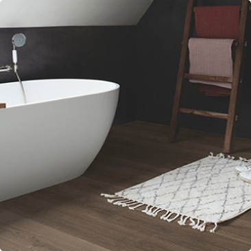
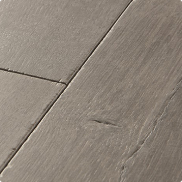
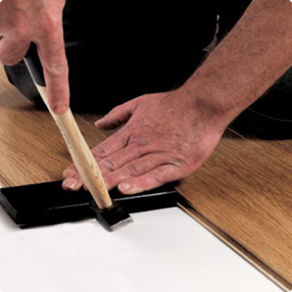
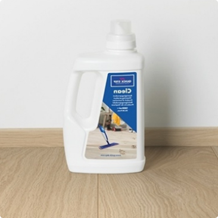
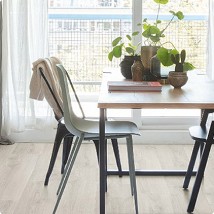

Пять причин выбрать ламинат
Ламинат — доступное напольное покрытие, которое вполне может заменить дорогой паркетный пол. Дизайнерское разнообразие ламината позволяет подобрать изделие под любой интерьер. Но это не единственное, чем так привлекательно это напольное покрытие. Рассмотрим его основные преимущества.
Ламинат прослужит вам очень долго
Само по себе покрытие обладает высокой износостойкостью — оно способно выдерживать ежедневные нагрузки. При этом ламинат хоть и боится влаги (кроме специальных моделей), но не пострадает от неё моментально — главное, не оставлять его мокрым на продолжительное время. А вот чего ламинат не боится, так это перепада температур. При воздействии тепла или холода изделие будет слегка менять размеры, но не потрескается. Качественный ламинат может прослужить вам несколько десятилетий.
Ламинат легко реставрировать
Предположим вы двигали мебель и всё же повредили напольное покрытие. В случае с линолеумом это было бы большой проблемой. Но у вас ламинат! Вы можете заменить повреждённую ламель и дальше пользоваться покрытием, которое выглядит как новое. Именно поэтому рекомендуют покупать ламинат с запасом, чтобы у вас был материал для замены повреждённых участков.
Покрытие из ламината очень просто монтировать
Укладка ламината дело бесхитростное — детали скрепляются друг с другом без особых усилий. Во время укладки ламината вам не придётся возиться с клеем или проводить какие-либо грязные работы. Вы сможете сделать это самостоятельно, если немного постараетесь. Но на самом деле заниматься монтажом ламината лучше вдвоём — тогда вы точно сможете установить покрытие быстро и качественно.
Ламинат лёгок в уходе
Поверхность ламината ровная и гладка, что упрощает уход. Достаточно протирать покрытие слегка мокрой тряпкой. Можно и вовсе пропылесосить ламинат и обойтись без влажной уборки. Поверхность ламината имеет специальный защитный слой, которые не позволяет грязи проникать внутрь материала.
Ламинат – бюджетный вариант, который выглядит престижно
Современный ламинат выглядит очень достойно – порой его трудно отличить от паркетного пола. Ламинат имеет чёткую древесную текстуру поверхности, глубокое тиснение достоверно имитирует различные виды древесины. Но при этом стоимость ламината гораздо ниже, чем у паркета из натурального дерева. Так зачем переплачивать, если по эксплуатационным характеристикам и долговечности, ламинат ничем не уступает паркету, а по некоторым показателям даже превосходит его